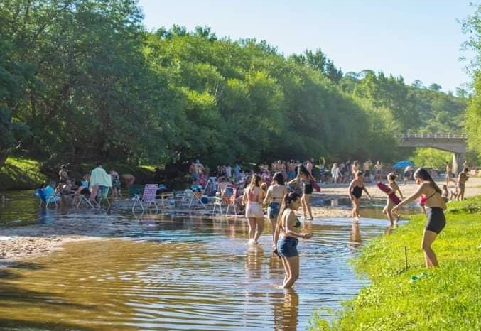

BALNEARIOS

BALNEARIO PASO DEL RIO
Brinda un pequeño dique para contar con aguas profundas, y sectores de Playas, conformando un espacio ideal para compartir con toda la familia, contado con sombras frondosas de la costa, Camping con asadores y Baños.
COMO LLEGAR
BALNEARIO CRUCE DE LOS RIOS
Se puede apreciar el Cruce de agua del Rio Jaime y Arroyo Noguinet, contando con aguas cristalinas, que se pueden disfrutar en familia. Posee Sectores de Estacionamiento, servicio de Provedurria y Camping con asadores, baños y espacio para el acampe.
COMO LLEGAR
BALNEARIO LA KEKA
Brinda aguas profundas y excelentes sombras y playa para compartir el dia en familia. cuanta con sector de estacionamiento. Se encuentra a 1 km. de la Ruta Provincial Nº 15.